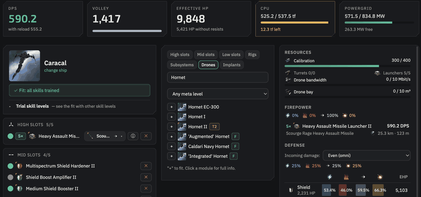
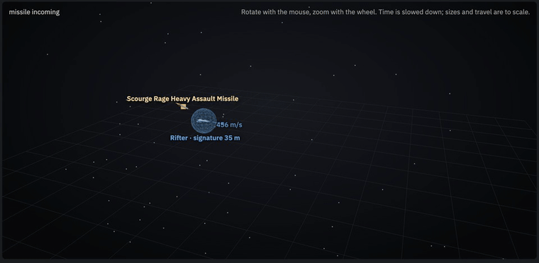
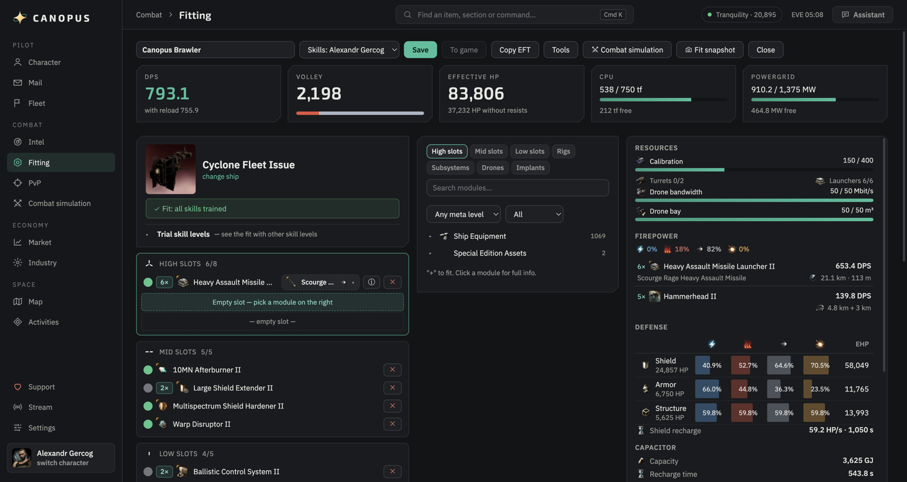
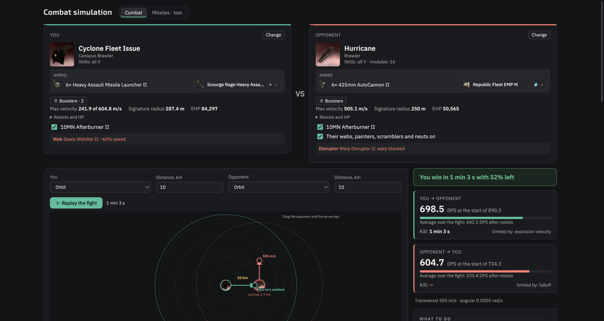
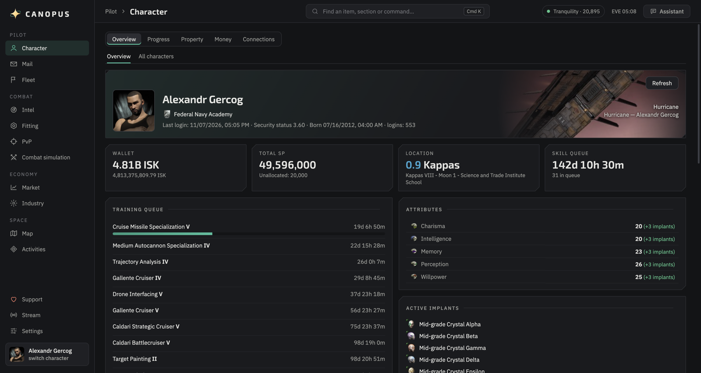

Fight the battle before you undock
Fit your ship, fly the fight second by second against theirs, watch Local and your intel channels, plan routes on a 3D map and see what the market really pays — in one app for Windows, macOS and Linux.
Free, no ads, no subscriptions. Nothing is sent to the developer.
Numbers you can trust, before the fight
Fly the fight before you take it
Your fit against theirs, flown second by second: orbits with real inertia, reloads, capacitor, neuts, webs and scrams, the Reactive Armor Hardener adapting, boosters from the first second. Then watch the replay — and press Find the best to let Canopus try every range, ammo and prop module for you.

Every number, live
Hover a module and every stat updates with the difference highlighted — before you fit it. A dogma engine of its own, checked against Pyfa 2.69.3 on 44 fits with no differences, with all 300 combat boosters in the game.

See why your missiles miss
Fire any missile at any ship in 3D: the blast grows at its explosion velocity while the target slips away, both to scale, with the game’s formula and its numbers next to it.

Replace the half-dozen tabs
Fitting, intel, route safety, the market, industry and every character — on your computer, with your data staying there.

Fitting tool
A dogma engine of its own, checked against Pyfa. Live preview, damage graph, boosters, fleet boosts.
More
Combat simulator
Your fit against theirs, flown second by second, with a replay and “Find the best”.
More
Intel and overlay
Local scan, intel channels, D-scan, an always-on-top overlay and Discord alerts.
More
3D map and travel
New Eden in 3D with kills, routes, jump bridges, sovereignty and route safety.
More
Market and industry
Honest market numbers, arbitrage, production chains, invention and PI.
More
Characters
All your characters on one screen, skill plans with remaps, wallet, assets and notifications.
MoreAI assistant
An optional chat that answers from your own Canopus data, not from guesses.
More
iPhone and iPad
A separate mobile app: characters, fits from the same engine, market, industry, PI and the map, with notifications.
App StoreOnly what the game shows you
Canopus uses CCP's ESI and game data, the chat and game logs the client writes to your Documents folder, and what you copy to the clipboard yourself. It never reads the game client's memory and never automates input — the same approach as Pyfa or RIFT.
Is it allowed?Nothing is sent to the developer
Login is CCP's own EVE SSO in your browser. Tokens are stored encrypted on your computer and never leave it. No telemetry, no accounts, no ads.
PrivacyFight the battle before you undock
Free, no ads, no subscriptions. Windows, macOS and Linux — and a separate app for iPhone and iPad.